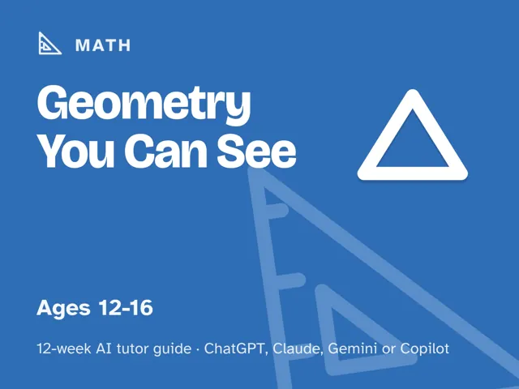
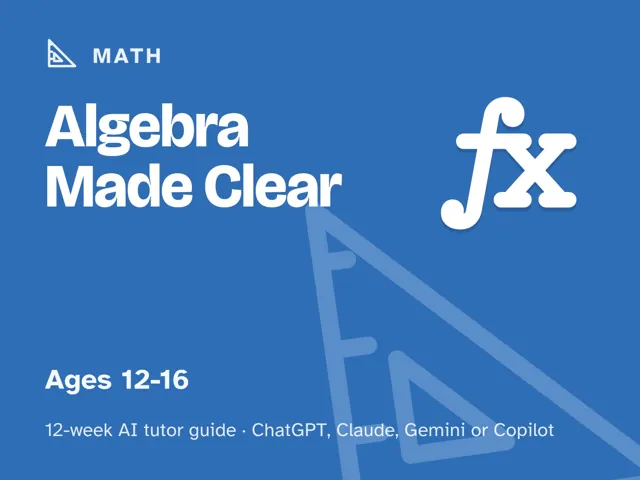

Algebra Made Clear
$29Instant download: a PDF to read, a browser copy, and the AI-tutor file you hand straight to any AI assistant.Buy it on Etsy →
Take the free placement check first: 15 minutes, and it names the week to start at.
Algebra usually fails to click because it's taught as steps to memorize instead of ideas to understand. This is a done-for-you, 12-week plan for guiding a 12–16-year-old from "letters make no sense" to solving a real algebra problem and explaining how they did it, using an AI tutor that diagnoses the actual gap and teaches what letters and equations really mean: balancing, undoing, and patterns. You do not need to remember your own algebra class.
What you get
- 12 deep weekly sessions, each built to run in one sitting of about 60 minutes: a plain-language explanation of the week's concept, a concrete worked example, a minute-by-minute session plan with the AI-tutor prompts built in, a "show me" checkpoint so you know it landed, a list of common mistakes to watch for, and optional independent practice.
- A "Never used an AI chat assistant? Start here" onboarding that takes about five minutes: it walks a complete beginner through picking and opening a free AI assistant (ChatGPT, Claude, Copilot, or Gemini all work; no paid plan needed) and getting it ready for the first session.
- Four rescue prompts up front for the moments every guide hits: the learner is frustrated, the AI just handed over the answer instead of teaching, the work is too easy, or you want to check the learner really understands rather than pattern-matching.
- Everything scripted for you: every step is timed and written out in full. You don't need algebra expertise or prior AI experience; you just run the session.
The 12 weeks
- Letters Are Mystery Numbers: a friendly diagnostic
- Expressions vs. Equations
- The Balance Scale: the idea underneath every equation
- One-Step Equations: Undoing
- Two-Step Equations
- Negative Numbers Aren't Scary
- Combining Like Terms
- Graphing a Line
- Word Problems Become Equations
- Project Week I: Plan a Real Algebra Challenge
- Project Week II: Solve It and Check It
- Demo Day and the Road Ahead
Who it's for
Parents, teachers, and homeschoolers guiding a learner aged 12–16 who is stuck on "I just don't get algebra." No algebra background needed on your part, and no prior AI experience either. You lead one fully scripted ~60-minute session each week; every step is timed and written out for you, so the tutor does the diagnosing and the teaching.
Why this instead of a free chatbot
A raw chatbot will happily solve the equation for your learner, which teaches nothing and skips right past the gap that caused the struggle. This pack ships the structure a chatbot lacks: a real 12-week arc that builds from what a letter even means up to graphing and word problems, a tutor that diagnoses before it teaches, guardrails that stop it from handing over answers, and checkpoints that prove the learner can do it themselves. Curriculum + guardrails + a way to see progress. That's the difference.
FAQ
- Do I need to remember algebra myself? No. The AI tutor diagnoses and teaches; you lead and ask for the "show me." Every session comes with the exact prompt to start it.
- Which AI does it use? What if I've never used one? Any modern AI assistant: ChatGPT, Claude, Copilot, or Gemini. The free version of any of them is enough; no paid plan needed. If you've never opened an AI chat before, the guide's first section walks you through setup in about five minutes before Week 1 starts.
- Is my child's data collected? Not by us. This is a digital guide sold to you, the adult. There's no login and no child account; you start and supervise every AI session under your own account. The AI provider may store chats, so the guide shows you what to keep out of them (first names and ages are fine).
- Does it work outside the US? Yes. The guide is written in US English, and every prompt tells the AI to use your country or region for spelling, units, money, school terms, and examples.
- What ages? Roughly 12–16. Works well for any learner who wants algebra to finally make sense, regardless of grade level.
- Refunds? Standard marketplace refund policy applies.
$29Instant download: a PDF to read, a browser copy, and the AI-tutor file you hand straight to any AI assistant.Buy it on Etsy →